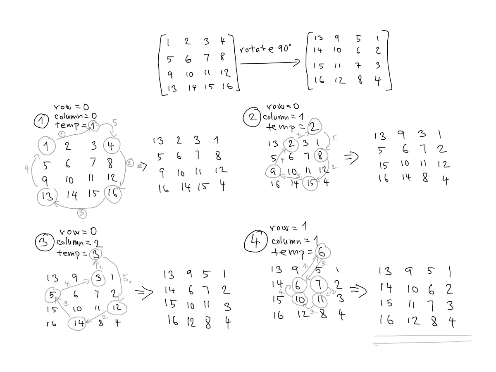

48. Rotate Image
考過的公司：Garena
Question
You are given an n x n 2D matrix representing an image, rotate the image by 90 degrees (clockwise).
You have to rotate the image in-place, which means you have to modify the input 2D matrix directly. DO NOT allocate another 2D matrix and do the rotation.
Example 1:

Input: matrix = [[1,2,3],[4,5,6],[7,8,9]]
Output: [[7,4,1],[8,5,2],[9,6,3]]
Example 2:

Input: matrix = [[5,1,9,11],[2,4,8,10],[13,3,6,7],[15,14,12,16]]
Output: [[15,13,2,5],[14,3,4,1],[12,6,8,9],[16,7,10,11]]
Constraints:
n == matrix.length == matrix[i].length1 <= n <= 201000 <= matrix[i][j] <= 1000
爭哥拓展題型
- n*n的二维矩阵，沿上下中线翻转、沿左右中线翻转
- n*n的二维矩阵，沿左上右下对⻆线翻转、沿左下右上对⻆线翻转
- n*n的二维矩阵，旋转90度、180度、270度
- n*m的二维矩阵，沿上下中线翻转、沿左右中线翻转
- n*m的二维矩阵，沿左上右下对⻆线翻转、沿左下右上对⻆线翻转(无法实现)
- n*m的二维矩阵，旋转90度、180度、270度 (需要重新申请新的存储数组)
✍🏽 My Solution
Solution #1 [翻轉代替旋轉]
class Solution {
public void rotate(int[][] matrix) {
int len = matrix.length;
// 先上下翻轉
for (int i = 0; i < len/2; i++) {
for (int j = 0; j < len; j++) {
swap(matrix, i, j, len-i-1, j);
}
}
// 對角線翻轉
for (int i = 0; i < len; i++) {
for (int j = i; j < len; j++) {
swap(matrix, i, j, j, i);
}
}
}
// 交換
private void swap (int[][] matrix, int i, int j, int p, int q) {
int tmp = matrix[i][j];
matrix[i][j] = matrix[p][q];
matrix[p][q] = tmp;
}
}
Explanation (in my words)
- How does their solution work?
- 翻轉類型
- 上下
- 左右
- 左上右下對角線
- 左下右上對角線
- 翻轉類型
- 90度：
翻轉1+翻轉3 - 180度：
翻轉1+翻轉2 - 270度：
翻轉2+翻轉3
- 90度：
- 翻轉類型
- What is the space/time complexity of their solution?
- time: O(n)
- space: O(1)
Solution #2 [原地旋轉(較難)]
public void rotate(int[][] matrix) {
int n=matrix.length;
for (int i=0; i<n/2; i++)
for (int j=i; j<n-i-1; j++) {
int tmp=matrix[i][j];
matrix[i][j]=matrix[n-j-1][i];
matrix[n-j-1][i]=matrix[n-i-1][n-j-1];
matrix[n-i-1][n-j-1]=matrix[j][n-i-1];
matrix[j][n-i-1]=tmp;
}
}
Explanation (in my words)
-
How does their solution work?

-
What is the space/time complexity of their solution?
- time: O($n^2$)
- space: O(1)